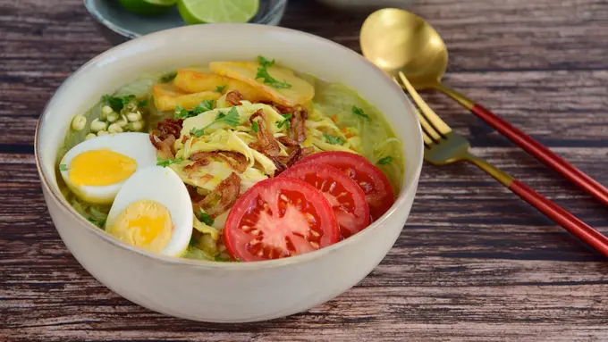

Resep Soto Ayam

Kangen dengan makanan berkua yang lezat seperti soto ayam kuah kuning tapi tak suka jika menggunakan santan kerena terlalu kental? Bisa kok membuat soto ayam bumbu kuning tapi dengan kelezatan yang sama, ini dia cara membuatnya.
Bahan :
- 500 gr dada ayam (bisa juga menggunakan daging ayam lainnya)
- air secukupnya
- garam dam gula secukupnya
Bumbu halus :
- 6 siung bawang putih
- 8 siung bawang merah
- 5 butir kemiri
- 2 ruas kunyit
- 1 ruas jahe
- 1 sdm ketumbar
- 1 sdt merica butir
Bumbu utuh :
- 2 batang serai, memarkan
- 1 ruas lengkuas, memarkan
- 2 lembar daun salam
- 5 lembar daun jeruk
Cara membuat :
- Rebus air secukupnya, masukkan ayam dan masak hingga mendidih. Tiriskan ayam. Buang air rebusan pertama. Ganti dengan air bersih, rebus lagi selama 30 menit untuk mendapatkan air kaldu. Tiriskan ayam, suwir-suwir.
- Tumis bumbu halus hingga harum, masukkan bumbu utuh, masak bumbu hingga matang sambil sesekali diaduk.
- Masukkan bumbu tumis ke dalam kaldu ayam, masak hingga mendidih dan sedap.
- Masukkan lagi ayam ke dalam kuah kaldu. Tes rasa, jika sudah sedap dan asin manisnya pas, angkat.